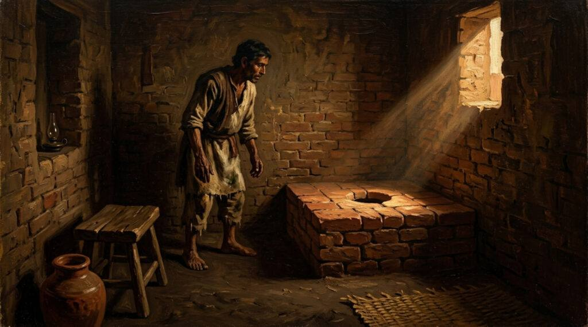
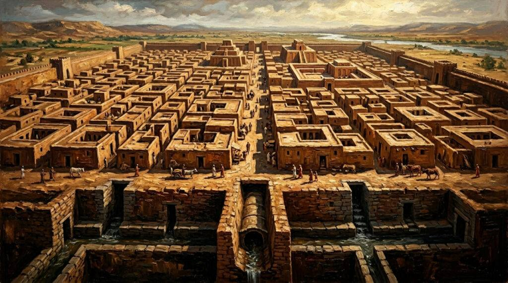
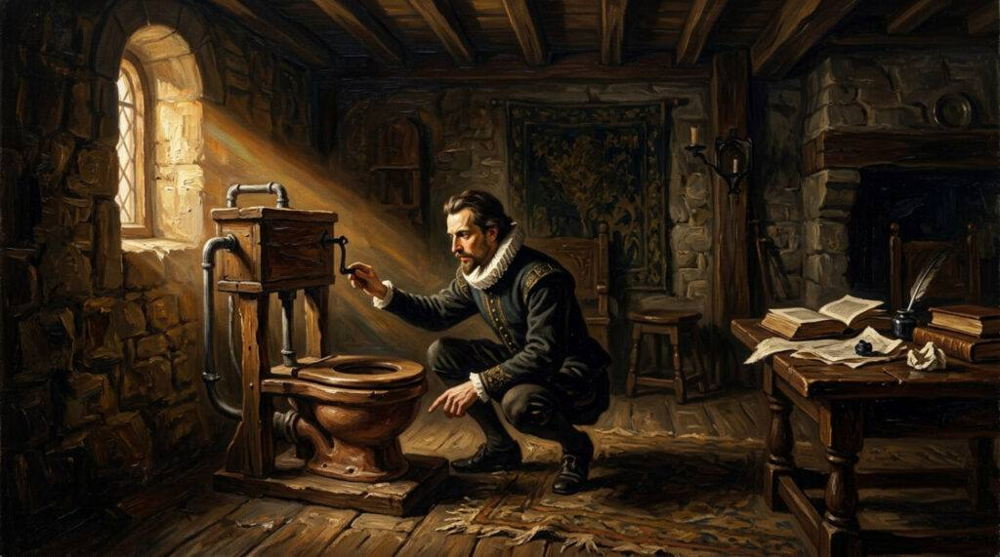
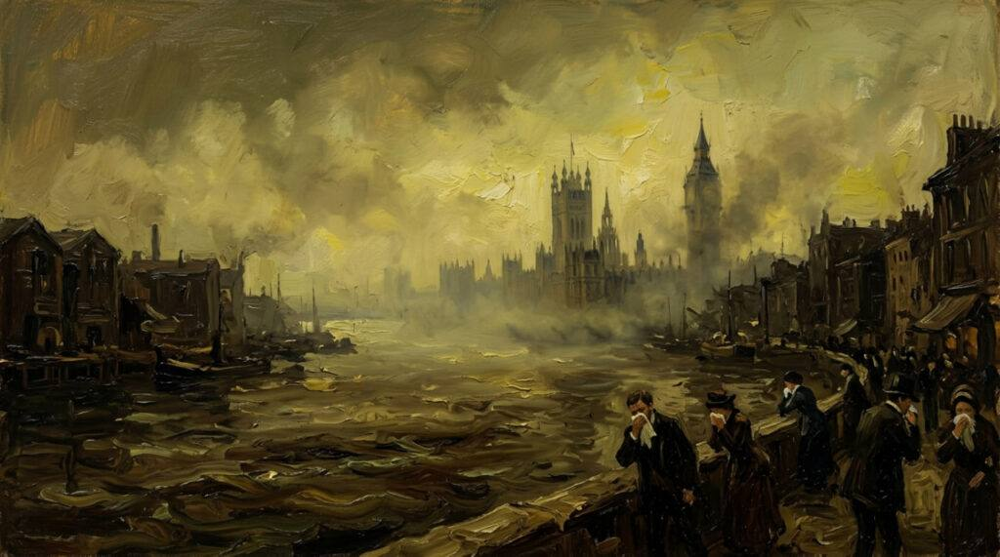
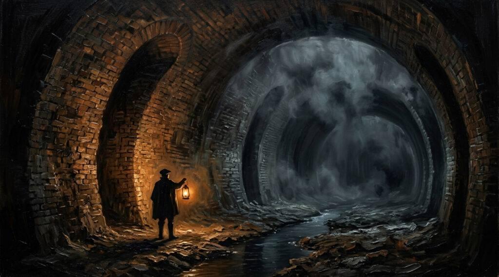
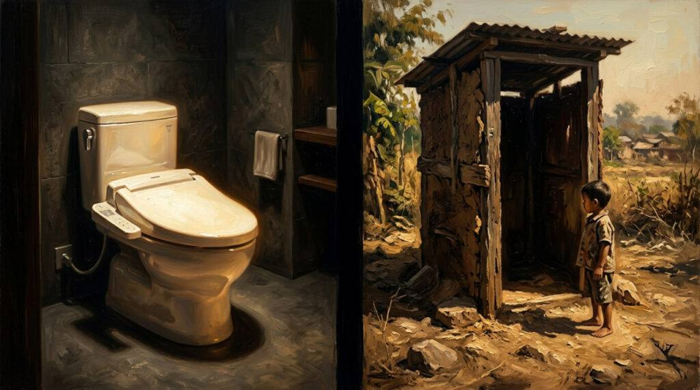

From Mohenjo-daro to the Great Stink, five millennia of forgotten genius built the room you never think about.

Every year, vaccines save millions. Surgeries reverse what once killed. Antibiotics hunt bacteria through the bloodstream. We celebrate all of this, rightly.
But one invention has saved more lives than all of them combined. It weighs about 50 kilograms. It is made of ceramic. It sits in a small private room, and most people never think about it once.
The toilet.
This is not a story about plumbing. It is a story about what happens when humans forget, then rediscover, the single most important idea in the history of public health: keep waste away from water. The people who solved this problem were not always famous. Some were poets in exile. Some were watchmakers nobody remembers. One was an engineer who built tunnels under a stinking river while Parliament held cloths to their faces above him.
Their work, invisible under every city on earth, decided who lived and who died. And in large parts of the world, that work is still unfinished.
The Toilet Through Time
Seven moments, one quiet room — the invention that saved more lives than any doctor.

The City That Got It Right
Mohenjo-daro builds flush toilets and underground drains — 4,600 years ago.
Rome's Shared Rooms
In Rome's public latrines, fifty people sit side by side. Privacy has not been invented yet.

A Throne for a Queen
Sir John Harington builds a flush toilet for Elizabeth I. The idea is right; the world is not ready.
The Bend That Beat the Smell
Watchmaker Alexander Cumming patents the S-bend — a curve of water that locks the smell away.

The Great Stink
London's river smells so terrible that Parliament funds sewers in just 18 days.

The Engineer in the Dark
Joseph Bazalgette builds London's great sewers — and doubles their size for a future he will never see.

3.4 Billion Still Waiting
The toilet won in the rich world. Nearly half of humanity still waits for safe sanitation.
The City That Got It Right, Then Disappeared
Picture a city of 35,000 people. Straight brick streets, two-story houses, a great public bath at the center. The year is around 2600 BCE, and this city — Mohenjo-daro, in what is now Pakistan — is one of the largest urban centers on earth.
Walk inside any house. In the corner, there is a small room. Inside: a brick seat with a hole. Below the hole, a terracotta pipe. That pipe connects to a covered drain running under the street, which carries waste out of the city entirely.
These people had private flush-connected toilets in their homes. Not one or two elite residences — nearly every house excavated at Mohenjo-daro shows the same arrangement. Scholars who have studied the city’s drainage network, published in peer-reviewed journals including World Archaeology, describe it as an engineering system unparalleled among Bronze Age civilizations. The detail most histories overlook is that the Indus Valley engineers also built inspection points into their drains — access shafts so workers could clear blockages. They understood that a sanitation system needs maintenance, not just construction.
At the same time, far to the west on the island of Crete, the Minoans were building their own solution. In the great palace at Knossos, around 1700 BCE, archaeologists found a wooden seat positioned over a channel. Water fed from a tank above would flush the contents away. This is, by most accounts, the earliest evidence of a gravity-flush mechanism in the ancient world — roughly 3,700 years before your bathroom was built.
But then something happened that would set humanity back by millennia. The Indus cities declined. The Minoan palace at Knossos burned. The knowledge of clean water management, the idea that waste belongs underground and drinking water must stay separate — it did not spread. It did not survive. The world would spend the next three thousand years relearning a lesson that two Bronze Age civilizations had already solved.
There is a quiet sadness in that. We know almost nothing about the engineers who built Mohenjo-daro’s drains. Their writing has never been deciphered. Their names are lost. But their pipes worked. And when those pipes fell silent, people began to die in numbers that are hard to imagine.
Fifty Thousand People, Sharing a Sponge
The Romans tried. To their credit, they always tried.
By the second century CE, Rome was home to over a million people — a city scale that would not be seen again in Europe for 1,500 years. To manage that population, Roman engineers built the Cloaca Maxima, one of history’s earliest sewage systems, channeling waste from the city into the Tiber River. They built public latrines: long stone benches with holes, beneath which fresh water flowed continuously, carrying waste away.
The Roman system was clever. Archaeologist Ann Olga Koloski-Ostrow, whose 2015 book The Archaeology of Sanitation in Roman Italy is one of the most thorough studies of the subject, notes that these latrines were deliberately social places. Twenty or thirty people would sit together, conducting business, discussing politics. Privacy was not the point. Efficiency was.
What was not efficient was hygiene. To clean themselves, Romans used a stick with a sponge on the end, shared communally — rinsed in a channel of running water between uses. If you stop and think about that for a second, the germ-transmission implications are obvious to us in a way they simply were not to anyone living before 1850. Romans had no knowledge of bacteria. They knew the latrines smelled. They did not know why people kept getting sick.
The Roman system collapsed with the empire. When the aqueducts stopped flowing in the fifth century, the latrines became ruins. The pipes broke. The water stopped. And Europe entered several centuries of arrangements that ranged from uncomfortable to catastrophic.
Medieval castles had garderobes — small rooms projecting from the castle wall, open at the bottom, so waste fell directly into the moat or the river below. Cities like Paris, London, and Rome filled with filth. When it rained, streets became rivers of mixed waste. Disease arrived in waves: the Black Death, typhoid, dysentery. Nobody understood the connection between what was in the streets and what was killing the children. Scholars who have studied disease patterns in medieval European cities find that mortality rates in dense urban centers were staggeringly high — not because of unusual pathogens, but because of ordinary ones constantly recycled through contaminated water.
This is not a metaphor. These people were drinking the same water they had thrown away.
The Poet Who Built a Throne for a Queen
In 1584, a young English courtier named Sir John Harington made a mistake. He shared a raunchy translation of the Italian poet Ariosto with the ladies of Queen Elizabeth’s court. Elizabeth, his godmother, was not amused. She banished him to his country estate at Kelston, near Bath.
Harington was 23 years old, stuck in Somerset with too much time and an unusually curious mind. During his exile, he began thinking about the problem that everyone experienced and nobody discussed publicly: the toilet.
What he built was extraordinary. Harington’s device — he called it the Ajax, a pun on “a jakes,” which was slang for a privy — had a cistern above, a bowl below, a valve in between. When you turned the handle, water rushed down, flushed the contents through a pipe, and carried everything into a cesspit beneath the house. Flushing required 7.5 gallons of water — a significant amount in an era before indoor plumbing. Harington noted, with dry humor, that when water was scarce, up to 20 people could use the device between flushes.
He described the Ajax in a satirical pamphlet published in 1596: A New Discourse of a Stale Subject, Called the Metamorphosis of Ajax. The Queen read it. She was offended by its crude jokes — and then had one installed at Richmond Palace. According to Guinness World Records, which treats Harington’s Ajax as the first documented flush toilet, Elizabeth used it regularly.
Then almost nothing happened for 180 years.
It is almost funny that an invention personally approved by the reigning monarch of England, installed in a royal palace, simply failed to catch on. The problem was twofold: cost, and the fact that Harington’s design had no mechanism to stop sewer gas from rising back through the pipe into the room. The Ajax flushed the waste away but immediately replaced it with a new, different smell. Most people stuck with their chamber pots.
Harington died in 1612 without seeing his invention change the world. He had built exactly two Ajax toilets: one for himself, one for his queen. His name is not in most history books. History, it seems, rarely rewards the first attempt.
The Watchmaker Who Bent a Pipe and Changed Everything
The man who finally made flush toilets livable was not a plumber, not a physician, not a city engineer. He was a Scottish watchmaker.
Alexander Cumming (1733–1814) was born in Edinburgh, trained as a clockmaker, and made his name in London building precision instruments. He constructed a barometrical clock for King George III. He helped design a series of elaborate barrel organs. He was eventually a founding Fellow of the Royal Society of Edinburgh. By any measure, toilets were not his field.
But in 1775, the same year American colonists fired the first shots at Concord, Cumming walked into the British patent office and filed Patent No. 1105 for an improved water closet. His crucial innovation was simple: an S-shaped bend in the pipe below the bowl. The S-bend trapped a small amount of water inside the pipe at all times, creating a seal. Sewer gas could not pass through water. The smell that had defeated Harington’s Ajax, and deterred millions of people from trying flush toilets for nearly two centuries, was blocked by a curve in a pipe.
Most modern toilets still contain a version of this curve. It is found in every bathroom in every building you have ever entered. You have never thought about it once. Cumming’s name is not on it.
There is a quiet irony in the fact that a watchmaker — someone trained to think in millimeters, in tolerances, in the precise behavior of fluids under pressure — solved a problem that architects, engineers, and scientists had failed to address for 180 years. The S-bend is not a grand invention. It is a small, elegant solution. Which is perhaps why it took so long: the people thinking about sanitation were thinking too large.
Three years after Cumming’s patent, Joseph Bramah improved the design further with a hinged flap valve. By the early 1800s, flush toilets connected to cesspits were appearing in the homes of wealthy Londoners. The gradual adoption of water closets across Britain in the early 19th century was slow — but it was moving.
Moving, unfortunately, in exactly the wrong direction.
The Summer That Broke London
Here is the problem nobody had anticipated: what happens when millions of people with flush toilets have no sewer system to flush into?
London’s cesspits overflowed. The waste went into the nearest available channels — which happened to be the same underground streams that fed into the Thames. By the 1840s, the Thames was an open sewer. London’s population had doubled between 1800 and 1850, reaching over 2.5 million — the largest city in the world. Between 1848 and 1854 alone, nearly 25,000 Londoners died of cholera, drinking river water that was, in effect, the city’s own flushed waste recycled back through the taps.
A physician named John Snow had already traced the 1854 Soho cholera outbreak to a single contaminated water pump on Broad Street — one of the earliest examples of epidemiological detective work in history. But the prevailing theory still blamed disease on miasma, on bad air, on smell itself. Snow’s evidence was compelling; the medical establishment remained skeptical.
Then came the summer of 1858.
An unusual heat wave baked the Thames. The effluent on its banks, months of accumulated human waste, industrial discharge, and slaughterhouse runoff, began to decompose in temperatures that had never been paired with that quantity of material. The smell that rose from the river was unlike anything London had experienced. It penetrated every building. Curtains in the Houses of Parliament — which sit directly on the riverbank — were soaked in lime chloride in an attempt to block the odor. It did not work. Members of Parliament fled their chambers, holding cloths to their faces. The press named it the Great Stink.
What followed was a political miracle. Legislation to address London’s sewage problem had been discussed, debated, and stalled for years. Within 18 days of the Great Stink beginning, Parliament passed a bill funding a complete reconstruction of London’s drainage. The evidence is thin that any MP had changed their mind about the science. What changed was that they could no longer breathe.
The contract went to one man: Joseph Bazalgette (1819–1891), chief engineer of the Metropolitan Board of Works. Bazalgette had been quietly preparing for this moment for years. He had already reviewed 137 proposals for London’s drainage. He knew what was needed.
The Engineer in the Dark
What Bazalgette proposed was audacious. He would build a network of brick-lined tunnels running east to west beneath London, intercepting the existing drains before they reached the river, and carrying all of London’s waste far downstream to the tidal Thames — where it would be swept out to sea. The scale was staggering: 82 miles of main intercepting sewers, fed by 1,100 miles of street drains, all built beneath a living city of 2.5 million people, without disrupting water supply or causing the kind of ground collapse that kills workers.
Construction began in 1859 and took 16 years. Bazalgette made one decision that would prove to matter more than any other: he built the tunnels twice as large as he calculated London currently needed. His reasoning, as reported by the Institution of Civil Engineers, was that he could not be certain how much London would grow. Better to overbuild now than to dig again in twenty years.
By the time Bazalgette died in 1891, London’s population had doubled again to 5.5 million. His tunnels handled it without modification. Today those same tunnels carry the waste of 9 million people. They have been working continuously for over 150 years, beneath a city that has rebuilt itself entirely around them. The bricks he chose — New Portland cement, selected for its water-resistance — are still largely intact.
When the sewers were completed in 1875, something remarkable happened. Cholera disappeared from London. Not reduced. Not managed. Gone. A disease that had killed tens of thousands within living memory simply stopped. Studies published in PLOS ONE on the impact of sanitation on cholera suggest that improved sanitation can reduce cholera incidence by 68–76%. In London, the effect appeared to be total.
Bazalgette saved more lives than any physician of his century. His portrait hangs on the Victoria Embankment, which he also designed. Most people who walk past it have no idea who he is.
The Man Whose Name Wasn’t on the Invention
No history of the toilet is complete without addressing the most persistent myth in the story: that a Victorian plumber named Thomas Crapper invented the flush toilet, and that his name gave English speakers their most familiar word for bodily waste.
Neither is true.
Thomas Crapper (1836–1910) was a real person — a skilled plumber and businessman who founded Thomas Crapper & Co. in London in 1861 and opened what is widely considered the world’s first bathroom showroom in 1870. He held nine patents, three of them for genuine improvements to water closet mechanisms, including a better ballcock and a U-bend improvement in 1880. He was commissioned by Prince Edward to supply plumbing for Sandringham House, and received royal warrants. He was a significant figure in the popularization of indoor plumbing.
He did not invent the flush toilet. By the time Crapper started his business, flush toilets based on Cumming’s 1775 design had been commercially available for decades. The invention most associated with him — the “valveless water waste preventer” — was actually patented by an employee named Albert Giblin in 1898. Crapper bought the rights and marketed it brilliantly.
As for the word “crap”: the Oxford English Dictionary traces it to Middle English, derived from the Dutch krappen (to cut off, separate) and Old French crappe (waste, chaff). Its first recorded use in a scatological sense appeared in 1846 — ten years after Crapper was born. The word predates the man.
The legend was largely invented by a 1969 satirical biography by New Zealand author Wallace Reyburn, titled Flushed with Pride. It was not meant to be taken seriously. American servicemen who passed through England during World War I did see Crapper’s name stamped on cisterns in public latrines, and may well have brought “crapper” home as slang — that part appears to be historically plausible. The rest is mythology.
What Crapper genuinely accomplished was something arguably more important than invention: he made the toilet socially acceptable. In an era when bathroom matters were considered too indelicate for public discussion, he put flush toilets in display windows on London’s King’s Road. He forced people to look at them, evaluate them, want them. He was, in the precise modern sense, a marketing genius. That is worth remembering accurately.
From 35,000 Lives Saved to 3.4 Billion Still Waiting
The toilet transformed everything. Not gradually, the way technology usually works, but at a speed that surprised the Victorians themselves.
Before Bazalgette’s sewers, London’s life expectancy was roughly 40 years — and much of the city’s mortality was concentrated in infancy. After the sewers came online, infant mortality in London dropped sharply within a single generation. Cities that had been capped in size by disease — because concentrations of more than a million people tended to generate enough waste to poison their own water supplies — could now grow without those limits. Modern cities of 5, 10, 20 million people exist because of underground pipes.
The Japanese, characteristically, took the concept further than anyone else. In 1980, the company TOTO launched the Washlet — an electronic bidet toilet with a heated seat, warm-water spray, and self-cleaning nozzle. It was initially marketed to hospitals. By the 1990s, it was in Japanese homes everywhere. As of 2025, TOTO has sold more than 70 million Washlet units worldwide, and over 80% of Japanese households use one daily. The Washlet is now spreading globally; in the United States, bidet adoption tripled during the COVID-19 pandemic, when toilet paper shortages pushed consumers toward alternatives.
The gap between Japan’s high-tech throne and the sanitation reality faced by much of the world is almost incomprehensible. According to the World Health Organization, 3.4 billion people — roughly 43% of humanity — still live without access to a safe toilet as of 2025. Every day, approximately 1,000 children under five die from diseases linked to unsafe water and sanitation. Annual deaths attributable to inadequate sanitation total around 564,000 from diarrheal disease alone, and 1.4 million if all WASH-related causes are counted.
These are not abstract numbers. They are the same story as London in 1854: people drinking what they have thrown away, because no one has yet built the pipes.
The villain of this story isn’t any single failure of technology. It is the persistent assumption that infrastructure is a luxury — something cities earn once they are prosperous, rather than something that makes prosperity possible. Bazalgette’s tunnels did not appear after London became a great city. They are part of why London became one.
What the Humble Toilet Teaches Us
Five quiet lessons from the least glamorous invention in history.
- Unglamorous inventions save the most lives. The toilet saved more people than any doctor in history — and nobody writes songs about it.
- A city is judged by what it hides. Mohenjo-daro had drains 4,600 years ago. Great civilizations are built underground, too.
- One small bend can beat a grand idea. Cumming's S-shaped pipe did what palaces of invention could not: it stopped the smell.
- Crisis moves what reason cannot. London argued for years. One summer of stink passed the law in 18 days.
- Progress is unfinished while people wait. 3.4 billion people still lack safe sanitation. The story ends when everyone is in it.
Frequently Asked Questions About the History of the Toilet
Who actually invented the flush toilet?
No single person invented the flush toilet. The earliest flush-connected toilets appear at Mohenjo-daro around 2600 BCE and in Minoan Crete around 1700 BCE. The first documented modern flush mechanism was built by Sir John Harington in 1596. The first patented design with an odor-blocking S-bend — the feature that made flush toilets practical — was filed by Scottish watchmaker Alexander Cumming in 1775. The person most often credited, Thomas Crapper, did not invent the toilet but was a prominent manufacturer and marketer of Victorian plumbing equipment.
Did Thomas Crapper invent the toilet?
No. Thomas Crapper (1836–1910) was a skilled London plumber and businessman who improved and popularized flush toilets but did not invent them. He held nine patents for plumbing improvements and opened the world’s first bathroom showroom in 1870. The common belief that he invented the toilet stems largely from a 1969 satirical biography. The word “crap” is also unrelated to his name — it derives from Middle English and predates Crapper by centuries.
Where does the word “loo” come from?
The most widely cited explanation links “loo” to “gardyloo,” a warning cry used in Edinburgh and old London before emptying chamber pots from upper windows into the street below. The phrase derived from the French gare de l’eau — “watch out for the water.” Over time, “loo” became British slang for toilet. This etymology is plausible but not definitively proven; some linguists favor a derivation from the French l’eau (water), as in “water closet.”
What did people use before toilets?
Across most of human history, people used outdoor latrines, fields, rivers, or chamber pots (small portable containers emptied manually). Wealthy households had servants to empty chamber pots, which were often disposed of out of windows into the street. Roman cities had communal public latrines with running water. Medieval castles had garderobes — small rooms built into the outer wall, with an open drop to the moat or river below. The private, indoor flush toilet connected to a sewer system is largely a post-1850 phenomenon.
Why did cholera disappear after London built its sewers?
Cholera is caused by the bacterium Vibrio cholerae, which spreads through water contaminated with human fecal matter. Before London’s sewers, the city’s drinking water was drawn from the Thames, which simultaneously received the waste from millions of flush toilets and cesspits. Once Joseph Bazalgette’s sewer system intercepted that waste before it could reach the river, the contamination cycle was broken. Research published in PLOS ONE found that improved sanitation reduces cholera incidence by 68–76%. In London, the effect after 1875 was near-total elimination.
How many people still lack access to a toilet today?
According to the World Health Organization, approximately 3.4 billion people — roughly 43% of the global population — do not have access to a safely managed toilet as of 2025. Of these, around 419 million still practice open defecation. Inadequate sanitation contributes to approximately 1.4 million deaths per year from preventable diseases, with over 1,000 children under five dying daily from sanitation-related illness.
What is special about Japanese toilets?
Japanese toilets — often called Washlets, a brand name of TOTO — combine a standard flush toilet with an electronic bidet featuring warm-water cleansing, heated seat, adjustable pressure and temperature, deodorization, and in many models a motion-activated lid. TOTO launched the first Washlet in 1980 and has sold over 70 million units worldwide as of 2025. More than 80% of Japanese households use one. High-end models include health-monitoring capabilities that can analyze urine samples for early indicators of disease.
The toilet didn't just change how we live. It decided who lived to build what came next.
What the Quiet Room Tells Us
Every great civilization has its monuments — the ones you can see from a distance. Pyramids. Cathedrals. Bridges. These are the things we build to be remembered.
Bazalgette’s tunnels are invisible. Cumming’s S-bend is buried in every wall. The drains of Mohenjo-daro are four meters underground and five millennia old. None of these things announce themselves.
But they are why you are alive.
The history of the toilet is not really about plumbing. It is about the work that holds a civilization together from beneath — the invisible infrastructure of ordinary life that most people never think about until it fails. When it works, you forget it exists. That is the point.
The next time you close that small door behind you, consider the 4,600-year argument you are sitting inside: that clean cities make healthy people, that waste belongs underground, and that the most powerful thing a society can build is often the thing its citizens never see.
One pipe. One curve. One engineer who doubled the size of his tunnels because he thought London might grow.
The toilet didn’t just change how we live. It decided who lived to build what came next.
Words to Take With You
drain
nounA pipe or channel that carries water away.
Mohenjo-daro's drains ran under the whole city, 4,600 years ago.
sewer
nounAn underground system that carries waste away from a city.
Bazalgette's sewers still protect London today.
flush
verbTo clean a toilet by sending water through it.
Harington's toilet needed 7.5 gallons to flush.
bend
nounA curve in a pipe or road.
Cumming's S-shaped bend trapped water and stopped the smell.
stink
nounA very bad smell.
The Great Stink of 1858 forced Parliament to act in 18 days.
engineer
nounA person who designs and builds machines, roads, or systems.
One engineer doubled his tunnels because he thought London might grow.
sanitation
nounSystems that keep places clean and protect health, like sewers and clean water.
Safe sanitation is still missing for 3.4 billion people.
epidemic
nounA disease that spreads quickly to many people.
Cholera epidemics killed nearly 25,000 Londoners in six years.
Summary
- A city in ancient Pakistan had flush toilets connected to underground drains around 2600 BCE, nearly 4,600 years ago.
- The word “loo” may descend from “gardyloo,” a French-derived warning shouted before emptying chamber pots onto London streets.
- Sir John Harington built the first modern flush toilet in 1596 — but his invention required 7.5 gallons per flush and took 180 years to catch on.
- Alexander Cumming, a Scottish watchmaker, solved the smell problem in 1775 with a simple S-shaped bend still found in every toilet today.
- London’s Great Stink of 1858 was so catastrophic that Parliament passed emergency funding in 18 days — legislation that had previously failed for years.
- Joseph Bazalgette’s 82 miles of underground tunnels eliminated cholera from London and are still working under the city today.
- Thomas Crapper did not invent the toilet. The word “crap” predates him by centuries.
- Today, 3.4 billion people — nearly half of humanity — still live without a safe toilet.
Sources and Further Reading
We told this story using the sources below. If you would like to read more, these are good places to begin.
- HISTORY — 'Who Invented the Flush Toilet?'
- Guinness World Records — the first flushing toilet
- Guinness World Records — the first patent for a flushing toilet (Cumming, 1775)
- Encyclopaedia Britannica — the life of John Harington, inventor of the Ajax
- UNC Press — Koloski-Ostrow, The Archaeology of Sanitation in Roman Italy
- History Hit — Alexander Cumming, the Scottish pioneer of the flush toilet
- Institution of Civil Engineers — Joseph Bazalgette, pioneer of modern sewage systems
- London Museum — the Great Stink of 1858
- London Museum — how Bazalgette built London's first super-sewer
- Smithsonian Magazine — three true things about sanitary engineer Thomas Crapper
- World Health Organization — the 'Sanitation' fact sheet
- World Health Organization — World Toilet Day: protecting health through safe sanitation
- PLOS ONE — Taylor et al. (2015): water, sanitation and hygiene interventions to control cholera
- TechXplore / AFP — Japan's high-tech toilets go global (2024)
A Note from HitoCast
This article was researched and written by the HitoCast editorial team. We cross-checked facts across eleven sources, including peer-reviewed academic studies of ancient sanitation and institutional histories from the Institution of Civil Engineers and the World Health Organization. If you spot an error or have a source to recommend, please email us — we update articles regularly.